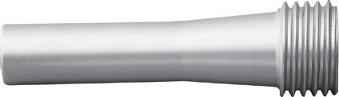
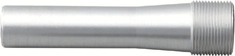

블라스트 부품 / 블라스트 노즐
블라스트 노즐 Blast Nozzles
고내마모 텅스텐 카바이드(Tungsten Carbide) 라이너를 적용한 에어 블라스트용 분사 노즐입니다. 호스에 직접 삽입하는 타입(DAN · DUN)과 노즐 홀더에 나사로 체결하는 타입(DBN · DSN)으로 구분됩니다.




- 주 취급 오리피스 사이즈: Ø9.5 mm, Ø12 mm, Ø14 mm (※ 그 외 사이즈는 주문 사양에 따라 대응 가능)
- 체결 방식 선택: 블라스트 호스에 직접 삽입하는 타입과 노즐 홀더에 나사로 체결하는 타입을 모두 지원합니다.
1. DAN 시리즈 호스 직접 삽입형 · 알루미늄 외피 · 텅스텐 카바이드 라이너
| 모델 (Model) | 오리피스 (Orifice) | 길이 / 각도 | 입구 / 나사 규격 |
|---|---|---|---|
| DAN-9.5 | Ø9.5 mm (3/8") | 170 mm (6.7") | 32 mm (1¼") Hose Entry |
| DAN-12 | Ø12 mm (1/2") | 170 mm (6.7") | 32 mm (1¼") Hose Entry |
| DAN-14 | Ø14 mm (5/8") | 170 mm (6.7") | 32 mm (1¼") Hose Entry |
| DAN-60° | Ø12 mm (1/2") | 분사 각도 60° | 50 mm (2") Thread |
2. DBN · DSN 시리즈 노즐 홀더 체결형 · 알루미늄 외피 · 텅스텐 카바이드 라이너
| 모델 (Model) | 오리피스 (Orifice) | 길이 (Length) | 나사 규격 (Thread) |
|---|---|---|---|
| DBN-12 | Ø12 mm (1/2") | 170 mm (6.7") | 42 mm (PF 1¼") |
| DSN-12 | Ø12 mm (1/2") | 170 mm (6.7") | 50 mm (2") |
3. DUN 시리즈 호스 직접 삽입형 · 우레탄 외피 · 텅스텐 카바이드 라이너
| 모델 (Model) | 오리피스 (Orifice) | 길이 (Length) | 입구 규격 (Entry) |
|---|---|---|---|
| DUN-9.5 | Ø9.5 mm (3/8") | 130 mm (5") | 32 mm (1¼") Hose Entry |
| DUN-12 | Ø12 mm (1/2") | 130 mm (5") | 32 mm (1¼") Hose Entry |
| DUN-14 | Ø14 mm (5/8") | 130 mm (5") | 32 mm (1¼") Hose Entry |
견적·규격 문의 051-319-2332 · daehatw@daum.net